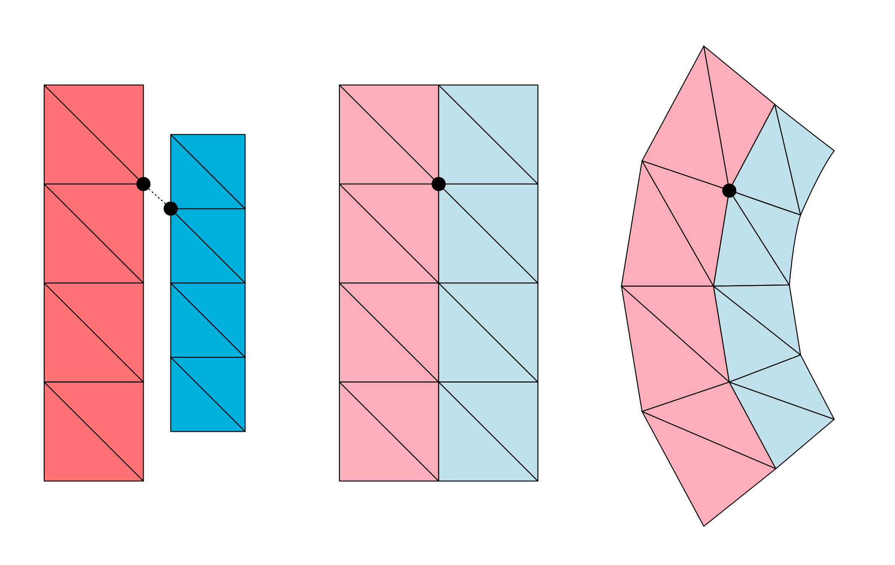
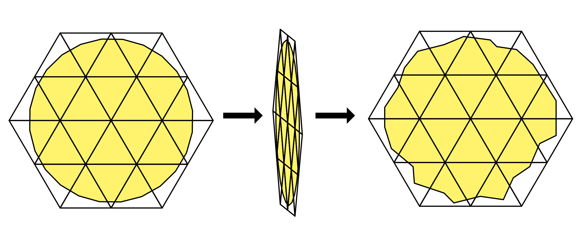

Deformable Bodies#
Deformable bodies simulate objects that bend, stretch, and squash. ovphysx supports two kinds:
Volume deformables — solid objects simulated on a tetrahedral mesh.
Surface deformables — thin, cloth-like objects simulated on a triangle mesh. (The old particle-cloth feature was removed; cloth is now a surface deformable.)
Deformables are defined across two schemas: the Omni Physics Deformable
Schema (OmniPhysics*, staged for inclusion in UsdPhysics) and the
PhysX Schema (Physx* extensions). Both ship as codeless schemas —
refer to Physics Schemas. This page shows the raw-USD
(ApplyAPI) authoring route.
Deformables require GPU simulation. Enable GPU dynamics on the physics scene (
physxScene:enableGPUDynamics = true,physxScene:broadphaseType = "GPU"); refer to Physics Scene. CPU simulation of deformables is not supported.
Single-Mesh Volume Deformable#
A volume deformable needs a UsdGeom.TetMesh simulation mesh. Apply
OmniPhysicsDeformableBodyAPI, OmniPhysicsVolumeDeformableSimAPI, and
UsdPhysics.CollisionAPI; PhysX-specific attributes go on
PhysxBaseDeformableBodyAPI and PhysxCollisionAPI.
from pxr import Usd, UsdGeom, UsdPhysics, Vt, Sdf
# A minimal tetrahedral cube used as the simulation mesh.
tet = UsdGeom.TetMesh.Define(stage, "/World/TetMesh")
tet.GetPointsAttr().Set(Vt.Vec3fArray([
(0, 0, 0), (1, 0, 0), (1, 1, 0), (0, 1, 0),
(0, 0, 1), (1, 0, 1), (1, 1, 1), (0, 1, 1),
]))
tet.GetTetVertexIndicesAttr().Set(Vt.Vec4iArray([
(0, 1, 3, 4), (1, 2, 3, 6), (1, 4, 5, 6), (3, 4, 6, 7), (1, 3, 4, 6),
]))
tet.GetSurfaceFaceVertexIndicesAttr().Set(UsdGeom.TetMesh.ComputeSurfaceFaces(tet))
prim = tet.GetPrim()
# Deformable body + mass.
prim.ApplyAPI("OmniPhysicsDeformableBodyAPI")
prim.GetAttribute("omniphysics:mass").Set(30.0)
# Volume simulation API + rest shape (topology must match the sim mesh).
prim.ApplyAPI("OmniPhysicsVolumeDeformableSimAPI")
prim.GetAttribute("omniphysics:restShapePoints").Set(tet.GetPointsAttr().Get())
prim.GetAttribute("omniphysics:restTetVtxIndices").Set(tet.GetTetVertexIndicesAttr().Get())
# The single collider is mandatory for a single-mesh deformable.
UsdPhysics.CollisionAPI.Apply(prim)
# Optional PhysX-specific attributes.
prim.ApplyAPI("PhysxBaseDeformableBodyAPI")
prim.GetAttribute("physxDeformableBody:disableGravity").Set(True)
prim.ApplyAPI("PhysxCollisionAPI")
prim.CreateAttribute("physxCollision:contactOffset", Sdf.ValueTypeNames.Float).Set(0.02)
prim.CreateAttribute("physxCollision:restOffset", Sdf.ValueTypeNames.Float).Set(0.01)
Single-Mesh Surface Deformable#
A surface deformable needs a triangle UsdGeom.Mesh. Apply
OmniPhysicsDeformableBodyAPI, OmniPhysicsSurfaceDeformableSimAPI, and
UsdPhysics.CollisionAPI (the simulation mesh is used for collision — a separate
collision mesh is not supported for surface deformables). PhysX-specific
attributes go on PhysxSurfaceDeformableBodyAPI.
prim.ApplyAPI("OmniPhysicsDeformableBodyAPI")
prim.GetAttribute("omniphysics:mass").Set(0.5)
prim.ApplyAPI("OmniPhysicsSurfaceDeformableSimAPI")
prim.GetAttribute("omniphysics:restShapePoints").Set(tri_mesh.GetPointsAttr().Get())
# omniphysics:restTriVtxIndices takes Vec3i triangle indices matching the sim mesh.
UsdPhysics.CollisionAPI.Apply(prim)
prim.ApplyAPI("PhysxSurfaceDeformableBodyAPI")
prim.GetAttribute("physxDeformableBody:disableGravity").Set(True)
prim.GetAttribute("physxDeformableBody:selfCollision").Set(True)

Hierarchies#
For more control, author a hierarchy: a root Xform carrying
OmniPhysicsDeformableBodyAPI, a simulation mesh with the sim API, optionally a
separate collision TetMesh (volume only), and any number of render
PointBased meshes. Register non-simulation meshes to the sim mesh with a bind
pose (OmniPhysicsDeformablePoseAPI, instance name for example custom, purpose
bindPose). Mark the simulation mesh purpose guide so it is not rendered.

Auto Mesh Generation#
Tetrahedral (and simplified triangle) meshes are often not available and must be
generated from a graphics mesh. The PhysxAutoDeformableBodyAPI schema (with
PhysxAutoDeformableHexahedralMeshAPI for hex-structured volume meshes) drives
this generation from a source mesh; ovphysx produces the required simulation and
collision mesh data during cooking when the stage is attached. Author the
auto-deformable schema attributes on the root prim and point them at the source
mesh.
Materials#
Deformable materials stack API schemas on a UsdShade.Material prim:
OmniPhysicsBaseMaterialAPI— friction and density (shared with rigid bodies).OmniPhysicsDeformableMaterialAPI— Young’s modulus and Poisson’s ratio (volume and surface).OmniPhysicsSurfaceDeformableMaterialAPI— surface-only parameters (thickness, bend stiffness).PhysxDeformableMaterialAPI/PhysxSurfaceDeformableMaterialAPI— PhysX extras (elasticity damping, bend damping).
Bind the material with UsdShade.MaterialBindingAPI using the "physics"
purpose, exactly as for rigid-body materials. Bind
to the root deformable prim (binding recurses to the simulation mesh).
from pxr import UsdShade
mat = UsdShade.Material.Define(stage, "/World/DeformableMaterial")
mp = mat.GetPrim()
mp.ApplyAPI("OmniPhysicsBaseMaterialAPI")
mp.GetAttribute("omniphysics:dynamicFriction").Set(10.0)
mp.GetAttribute("omniphysics:density").Set(1000.0)
mp.ApplyAPI("OmniPhysicsDeformableMaterialAPI")
mp.GetAttribute("omniphysics:youngsModulus").Set(1e5)
mp.GetAttribute("omniphysics:poissonsRatio").Set(0.45)
binding = UsdShade.MaterialBindingAPI.Apply(deformable_root_prim)
binding.Bind(mat, UsdShade.Tokens.weakerThanDescendants, "physics")
Deformable material properties (dynamic friction, Young’s modulus, Poisson’s ratio, elasticity damping, and — for surface — bending stiffness/thickness/ damping) can also be read and written in bulk at runtime through the deformable material tensor types — refer to Tensor Bindings.
Attachments and Collision Filters#
Attach a deformable to another deformable, a rigid body, a collider, or any
Xformable by defining low-level attachment prims. For example, a vertex-vertex
attachment couples specific simulation-mesh vertices of two deformables:
attachment = stage.DefinePrim("/World/VtxVtxAttachment", "OmniPhysicsVtxVtxAttachment")
attachment.GetRelationship("omniphysics:src0").SetTargets(["/World/DeformableBody0"])
attachment.GetRelationship("omniphysics:src1").SetTargets(["/World/DeformableBody1"])
attachment.GetAttribute("omniphysics:vtxIndicesSrc0").Set([dim - 1, dim * dim - 1])
attachment.GetAttribute("omniphysics:vtxIndicesSrc1").Set([0, dim * dim - dim])
A vertex-Xform attachment (OmniPhysicsVtxXformAttachment) pins vertices to a
coordinate frame. PhysxAutoDeformableAttachmentAPI generates attachments
automatically from geometric overlap between a deformable and a collider/xform.
Use ElementCollisionFilter prims to suppress unwanted collisions at attachment
sites; where element-level filtering is unsupported (for example between two
surface deformables), fall back to standard prim-level
group or pair filtering.
Limitations#
The current Omni PhysX implementation is more restricted than the schema allows:
Exactly one collider per deformable body. For surface deformables the simulation mesh must be the collider (no separate collision mesh).
The rest-shape topology must be identical to the simulation-mesh topology (matching indices and point counts); the rest shape cannot be manipulated at simulation time.
Kinematic animation of simulation-mesh points is supported for volume deformables only.
Static friction is not supported — use a sufficiently high dynamic friction. Friction combine modes apply only to rigid-deformable contacts, not deformable-deformable.
surfaceStretchStiffness/surfaceShearStiffnessare unsupported;surfaceBendStiffnessis the only bend-resistance control.Multi-material binding (through
UsdSubset) is unsupported; attachment stiffness/ damping and tri-tri attachments are unsupported.
Reading Deformable State#
At runtime, volume and surface deformables expose their nodal (per-vertex) state through tensor bindings:
Volume:
DEFORMABLE_SIM_NODAL_POSITION/..._VELOCITY,DEFORMABLE_SIM_KINEMATIC_TARGET, read-only rest positions and element indices.Surface:
SURFACE_DEFORMABLE_SIM_POSITION/..._VELOCITY, read-only rest positions and triangle connectivity.
Refer to the Tensor Bindings reference. Simulated
mesh points and velocities are also available through the ovstage
output read API (object types
DEFORMABLE_VOLUME and DEFORMABLE_SURFACE, attributes points / velocities).